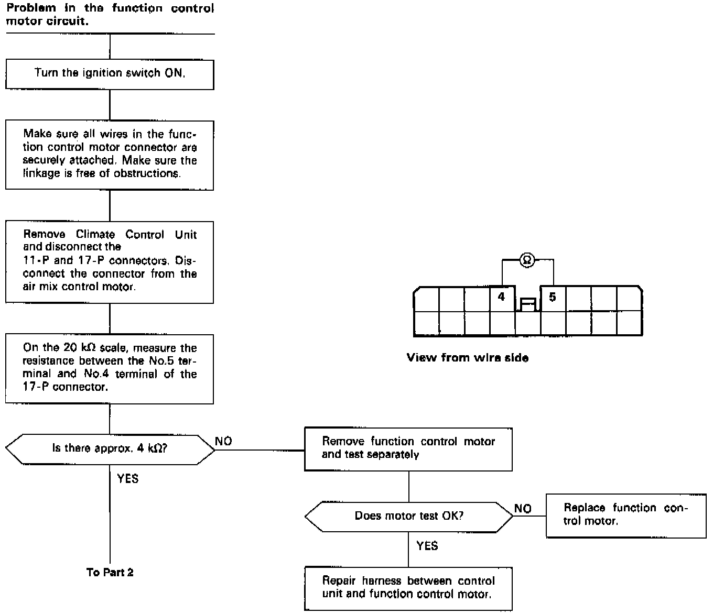
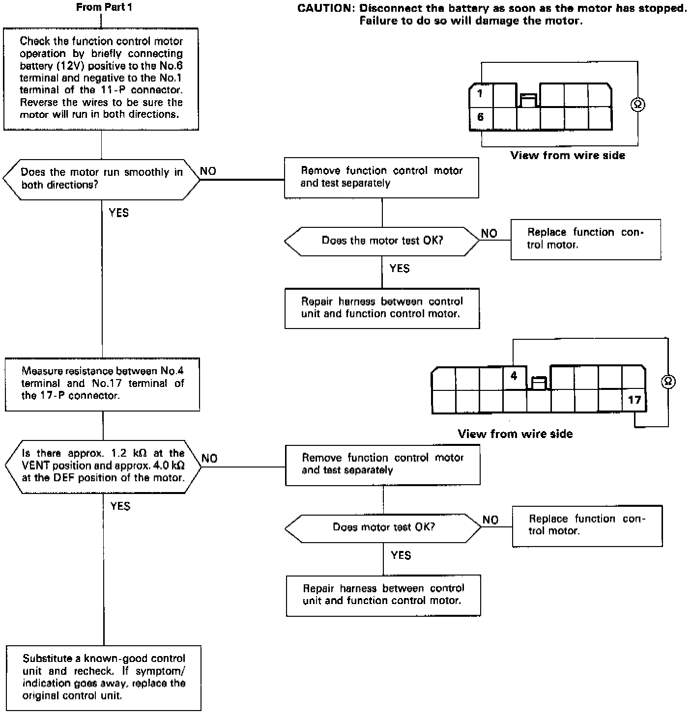

Automatic Climate Control
Function Control MotorSelf-diagnosis indicator light D comes on: Indicates a problem in the Function Control Motor Circuit.
The function control motor controls the outlet air direction and volume according to output from the control unit.

